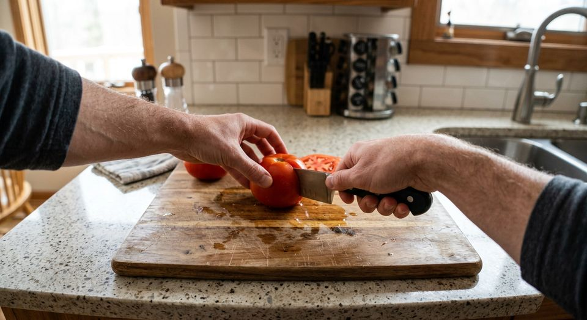

Guía 02 · Grabar video POV para IA
Qué es el video egocéntrico (POV) y por qué lo compran las empresas de robótica
El video egocéntrico, o POV (del inglés point of view), es video grabado desde los ojos de la persona que hace una tarea. Se volvió uno de los datos más buscados por las empresas de robótica e inteligencia artificial. Aquí te explicamos qué es, en qué se diferencia de un video común y por qué hay empresas dispuestas a pagar por él.

Qué es el video egocéntrico (POV)
En un video común, la cámara mira a la persona desde afuera. En un video egocéntrico, la cámara está sobre la persona, a la altura de la frente o de los ojos, y muestra lo mismo que ella ve: sus manos, los objetos que agarra y el lugar donde trabaja. Por eso también se lo llama video en primera persona.
Para grabarlo se usan cámaras de acción, anteojos con cámara o, cada vez más, un celular sujeto en una vincha de cabeza. Esta última opción es la más accesible: muchas personas ya tienen un teléfono con una cámara excelente y solo necesitan el soporte.
Por qué las empresas de robótica lo necesitan
Un robot que tiene que doblar ropa, cargar un lavavajillas o usar una herramienta necesita aprender cómo se mueven las manos en esas situaciones: cómo se agarra un objeto, en qué orden se hacen los pasos y qué se hace cuando algo sale mal. El video egocéntrico muestra exactamente eso, desde el punto de vista más parecido al de una cámara montada en un robot.
Con miles de horas de este material, los equipos de investigación entrenan modelos que reconocen acciones, predicen el siguiente paso de una tarea o imitan movimientos humanos. Es parte de lo que se conoce como aprendizaje por imitación y de los llamados modelos de visión, lenguaje y acción para robots.
Qué lo hace útil para entrenar IA
- Manos en cuadro: la información más valiosa está en las manos y en los objetos que tocan.
- Tareas completas: de principio a fin, sin cortes, para que el modelo entienda la secuencia.
- Ambientes reales: casas, cocinas y patios de verdad, con su desorden y su variedad, no estudios armados.
- Diversidad: distintas personas, objetos, luces y costumbres. Un modelo entrenado solo con cocinas de un país funciona peor en las de otro.
- Consentimiento y trazabilidad: las empresas serias necesitan saber que quien grabó aceptó por escrito el uso del material.
Qué tipo de tareas se graban
La mayoría de los proyectos piden tareas cotidianas, que cualquiera hace en su casa:
- Cocina: cortar, amasar, lavar y guardar vajilla, preparar una comida simple.
- Limpieza y orden: barrer, limpiar superficies, ordenar un placard o un escritorio.
- Ropa: poner y sacar del lavarropas, colgar, doblar y guardar.
- Al aire libre: regar, juntar hojas, tareas simples de jardín o de mantenimiento.
Cada proyecto define sus propias guías: qué tareas, en qué ambientes, cuánto dura cada clip y cómo tiene que estar encuadrado.
Por qué grabar en Argentina
La mayoría de los datos egocéntricos disponibles se grabaron en pocos países. Las casas, herramientas, alimentos y formas de hacer las cosas en Argentina y Latinoamérica están poco representadas, y esa falta de diversidad limita a los modelos. Además, el huso horario UTC−3 se superpone con buena parte de la jornada de Estados Unidos y con las tardes de Europa, lo que facilita coordinar proyectos con equipos de esos países.
Privacidad: qué se cuida al grabar
Al grabar en primera persona es fácil que aparezcan cosas que no deberían estar en el video. Por eso las buenas prácticas incluyen:
- Evitar caras de otras personas, pantallas con información y documentos.
- Difuminar lo que aparezca por accidente antes de entregar el material.
- Contar con el consentimiento informado de cada persona que graba y tratar los datos personales según la Ley 25.326 de Protección de Datos Personales.
Cómo puedes participar
Si vives en Argentina y tienes un celular compatible, puedes sumarte como colaborador independiente para grabar este tipo de video. Antes de empezar, revisa los requisitos de celular y vincha y lee cómo funciona el pago y cómo evitar estafas.
Y si eres parte de un equipo de IA o robótica que busca un proveedor de video egocéntrico en Argentina, mira nuestra propuesta para empresas.
Registro abierto
Empieza a grabar videos para IA
Regístrate gratis desde el celular. Te avisamos por email cuando haya un proyecto que encaje con tu perfil, con las guías y la tarifa antes de empezar.